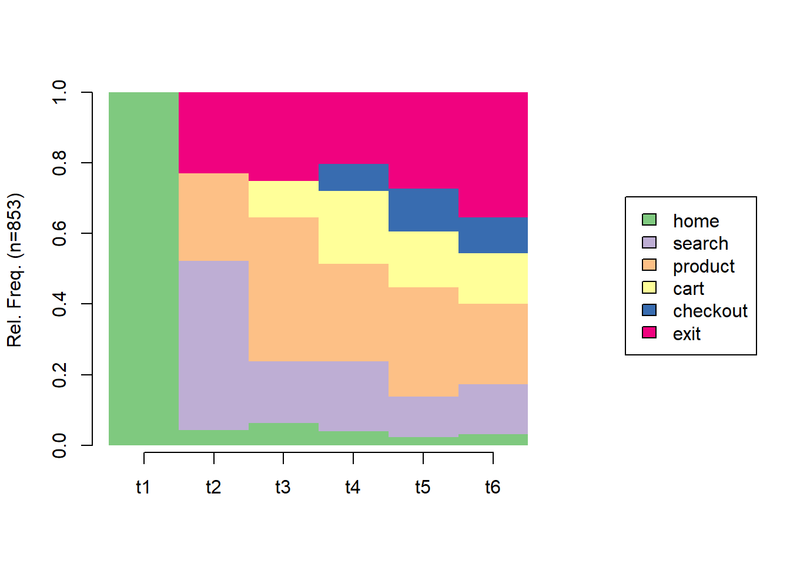
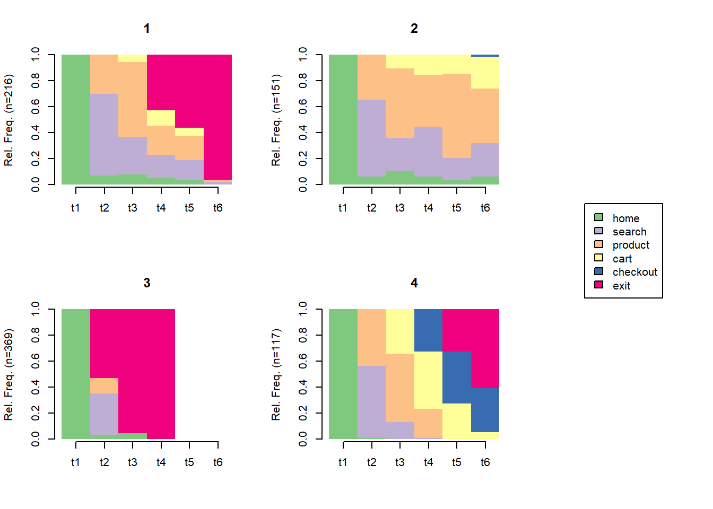

flowchart TB
LOG["Sessionized log:<br/>ordered action sequences"]
subgraph MK["Path and Markov models"]
M1["Transition probabilities<br/>between states"] --> M2["Removal-effect<br/>attribution"]
end
subgraph SA["Sequence analysis"]
S1["Optimal-matching<br/>distances"] --> S2["Clusters of<br/>behavioral types"]
end
subgraph DP["Deep sequence models"]
D1["RNN, LSTM, GRU"]
D2["Transformers,<br/>self-attention"]
D3["Survival models,<br/>hazard of churn"]
end
LOG --> MK
LOG --> SA
LOG --> DP
51 Clickstream and Behavioral Data
Every action a user takes inside a digital property leaves a trace. A page is requested, a button is tapped, a product is viewed, a search is run, an item is added to a cart, a video is scrubbed, a form is abandoned. Logged with a timestamp and a user or device identifier, these traces accumulate into a clickstream: a long, ordered record of who did what, where, and when. Behavioral log data of this kind is the connective tissue of digital marketing. It sits upstream of nearly every metric a firm reports, every recommendation it serves, and every attribution claim it makes about which channel “caused” a sale. Where survey data asks consumers what they intend, and panel data records what they ultimately bought, clickstream data records the process in between: the navigation, hesitation, comparison, and backtracking through which an intention becomes (or fails to become) a purchase (Montgomery et al. 2004; Bucklin and Sismeiro 2003).
Clickstream data is distinctive among marketing data in three respects, and each shapes the methods this chapter develops. First, it is sequential. The order of events carries information that any aggregation into counts destroys: a session that goes home page, search, product, cart, checkout is a different object from one that visits the same five pages in a different order, even though both produce identical page-view totals. Second, it is sparse and heavy-tailed at the user level. Most visitors view a handful of pages and never return; a small minority generates the bulk of events and revenue, so distributions of session length, dwell time, and visit frequency are governed by their tails rather than their means (Johnson et al. 2004). Third, it is observational and self-selected. Users choose what to click, and that choice is correlated with unobserved intent, so a naive regression of conversion on “pages viewed” recovers a mixture of behavior and latent motivation rather than a causal effect. The methods that follow are, in large part, disciplined responses to these three features.
This chapter develops clickstream analysis in the order a practitioner confronts it. It begins with applications, the marketing questions that behavioral logs are asked to answer. It then fixes the data structure, defining events, sessions, and sequences, and confronts the deceptively consequential problem of sessionization, illustrated on a simulated event log we carry through the rest of the chapter. From there it develops the two classical modeling traditions: path and Markov models, which treat navigation as a stochastic walk over states and yield a principled notion of channel attribution through the removal effect; and sequence analysis, which treats each user’s trajectory as a categorical sequence to be aligned, clustered, and visualized. It then surveys deep sequence models (recurrent and transformer architectures) that learn representations of behavior directly from raw event streams, returns to attribution as a problem in its own right, and closes with industry and production practice, the event pipelines and feature engineering that turn raw logs into model inputs without leaking the future into the past. Throughout, the worked code is genuinely runnable: we simulate an event log and analyze it with the markovchain and TraMineR packages. Figure 51.1 maps the three modeling traditions onto the shared object they consume.
51.1 Applications
Behavioral log data underwrites a wide span of marketing decisions. It is worth fixing the major application areas before the methods, because the choice of method is dictated by the question.
Web and app session analysis is the foundational use. Aggregating events into sessions yields the descriptive vocabulary of digital marketing: session counts, pages per session, dwell time, bounce rate, entry and exit pages, and the conversion rate of a session. These quantities are the raw material of dashboards and the denominators of optimization, and getting them right depends entirely on defining a session correctly (Section 51.2.3). Early marketing-science work established that browsing itself is a modelable behavior, not merely a precursor to purchase: the depth and dynamics of online search vary systematically across users and over the course of a visit (Johnson et al. 2004), and a site visit can be represented as a probabilistic walk whose transitions reveal goal-directed versus exploratory navigation (Bucklin and Sismeiro 2003). The conversion decision within and across visits is itself dynamic—the probability of buying evolves with accumulated visits and within-session behavior (Moe and Fader 2004; Sismeiro and Bucklin 2004)—and browsing spans competing sites, so a single-site log is a censored view of a cross-site process (Park and Fader 2004). At the fine grain of product search, clickstream reveals how consumers actually explore a category before choosing (Bronnenberg, Kim, and Mela 2016).
Path-to-purchase analysis asks how users move through the funnel: which sequences of pages and channels precede conversion, where they stall, and how the path differs between buyers and non-buyers. The path is rarely linear. Modern journeys loop across sessions, devices, and channels, and a central empirical finding is that the apparent “last step” before a purchase is a poor summary of what produced it (Montgomery et al. 2004).
Attribution is path analysis with a managerial edge: given a conversion preceded by several marketing touchpoints (a paid-search click, a display impression, an email, an organic visit), how much credit does each touchpoint deserve? Attribution is the budget allocation problem of digital marketing, and it is the application where the choice between naive heuristics and a model of the path matters most (Section 51.6) (Kannan and Li 2017).
Recommendation uses behavioral logs as the primary signal of preference. Co-view and co-purchase patterns, session context, and the sequence of recent interactions drive the “customers who viewed this also viewed” and “recommended for you” systems that mediate a large share of digital demand. Sequential recommendation, in particular, treats the next-item problem as a prediction over the user’s event sequence (Zheng et al. 2023).
Churn and retention prediction reframes the log as a leading indicator of disengagement. Declining session frequency, shortening visits, and shifts in the mix of activities often precede outright lapse, so a model trained on behavioral features can flag at-risk customers while intervention is still possible. Because lapse is a timing phenomenon, the natural statistical frame is survival analysis (Section 51.5), which models the hazard of churn as a function of behavior to date.
Bot and fraud detection turns the same sequential structure to a defensive purpose. Automated traffic, click fraud, and scraping leave behavioral signatures that differ from human browsing: implausibly regular inter-event timing, non-human navigation paths, and event rates no person could sustain. Distinguishing genuine engagement from synthetic traffic is a prerequisite for trustworthy metrics, since uncleaned bot traffic inflates every downstream number and corrupts attribution and recommendation alike.
These applications share a substrate. Each begins from the same event log and differs only in the target (a session metric, a path, a conversion, a next item, a lapse time, a bot flag) and in the modeling machinery brought to bear. We therefore turn first to the substrate itself.
51.2 Data Structure and Sessionization
51.2.1 Events, Sessions, and Sequences
The atom of clickstream data is the event: a single recorded interaction. At minimum an event carries three fields, an actor (a user or device identifier), an action (what happened, often called the event type or page), and a timestamp (when, to the second or millisecond). Real event records carry much more, a session or device context, the referring channel, page or screen attributes, the product or item touched, and device and geographic metadata, but the actor-action-time triple is the irreducible core. Formally, the raw log is a set of tuples \[ e = (u,\, a,\, t,\, \mathbf{x}), \tag{51.1}\] where \(u\) indexes the actor, \(a \in \mathcal{A}\) the action drawn from an event vocabulary \(\mathcal{A}\), \(t\) the timestamp, and \(\mathbf{x}\) any additional payload.
A session (or visit) groups a user’s events into a single episode of activity. A session is the unit at which most descriptive metrics are defined and the unit a path model walks through. The grouping is not given by the data; it is constructed by a sessionization rule, and that construction is the first place a clickstream analysis can quietly go wrong (Section 51.2.3).
A sequence is the ordered list of actions within a session (or, sometimes, within a user’s entire history), \[ s_u = (a_{u,1},\, a_{u,2},\, \dots,\, a_{u,L_u}), \tag{51.2}\] where the events are sorted by timestamp and \(L_u\) is the session length. The sequence is the object the methods of this chapter operate on. A Markov model treats it as a realization of a stochastic walk over \(\mathcal{A}\); sequence analysis treats it as a categorical string to be aligned and clustered; a recurrent network treats it as an ordered input to be encoded. The recurring theme is that order is information, and the analytical leverage of clickstream data comes precisely from refusing to discard it.
51.2.2 Simulating an Event Log
To make the rest of the chapter concrete and reproducible, we simulate a clickstream event log with realistic structure: many users, multiple sessions per user separated by idle gaps, and within-session navigation governed by a plausible page-transition process that culminates, for some sessions, in a purchase. We carry this single simulated log through the sessionization, Markov, and sequence-analysis demonstrations that follow. Figure 51.2 sketches the page-transition process that generates each session: a forward funnel from home toward checkout, with backtracking and a persistent risk of exit at every page.
flowchart LR HM["home"] -->|"0.45"| SR["search"] HM -->|"0.25"| PD["product"] SR -->|"0.50"| PD PD -->|"0.30"| CT["cart"] PD -->|"0.20"| SR CT -->|"0.45"| CO["checkout"] CT -->|"0.20"| PD CO -->|"1.00"| EX["exit<br/>(absorbing)"] HM -->|"0.25"| EX SR -->|"0.25"| EX PD -->|"0.20"| EX CT -->|"0.20"| EX
Code
library(tidyverse)
set.seed(55)
# --- Event vocabulary and a plausible page-transition process -----------------
# States are pages a user can be on. "home", "search", "product", "cart",
# "checkout" form the conversion funnel; "exit" is an absorbing leave state.
pages <- c("home", "search", "product", "cart", "checkout", "exit")
# Row-stochastic transition matrix: P[from, to]. These probabilities encode a
# realistic funnel where most users browse and leave, a minority advance to cart,
# and fewer still check out. Each row sums to 1.
P <- matrix(0, nrow = length(pages), ncol = length(pages),
dimnames = list(pages, pages))
P["home", ] <- c(0.05, 0.45, 0.25, 0.00, 0.00, 0.25)
P["search", ] <- c(0.05, 0.15, 0.50, 0.05, 0.00, 0.25)
P["product", ] <- c(0.05, 0.20, 0.25, 0.30, 0.00, 0.20)
P["cart", ] <- c(0.02, 0.03, 0.20, 0.10, 0.45, 0.20)
P["checkout", ] <- c(0.00, 0.00, 0.00, 0.00, 0.00, 1.00) # checkout -> exit
P["exit", ] <- c(0.00, 0.00, 0.00, 0.00, 0.00, 1.00) # absorbing
stopifnot(all(abs(rowSums(P) - 1) < 1e-9)) # rows are proper distributions
# --- Walk a single session over the page-transition process ------------------
# A session starts on "home", steps through P until it hits "exit", and is
# capped at max_len steps to keep sessions finite.
simulate_session <- function(P, start = "home", max_len = 20) {
states <- start
cur <- start
for (i in seq_len(max_len)) {
nxt <- sample(colnames(P), size = 1, prob = P[cur, ])
states <- c(states, nxt)
cur <- nxt
if (cur == "exit") break
}
states
}
# --- Generate users, sessions, and timestamped events ------------------------
n_users <- 400
out <- vector("list", 0)
for (u in seq_len(n_users)) {
user_id <- sprintf("u%04d", u)
n_sessions <- 1 + rpois(1, lambda = 1.2) # 1+ sessions per user
# First session begins at a random time within a 30-day window.
clock <- as.POSIXct("2025-01-01 00:00:00", tz = "UTC") +
runif(1, 0, 30 * 24 * 3600)
for (sess in seq_len(n_sessions)) {
visit <- simulate_session(P)
# Inter-event gaps within a session: seconds to a few minutes.
gaps <- c(0, round(rexp(length(visit) - 1, rate = 1 / 40)))
ts <- clock + cumsum(gaps)
out[[length(out) + 1]] <- tibble(
user_id = user_id,
page = visit,
ts = ts
)
# Idle gap before the user's next session: hours to days.
clock <- max(ts) + runif(1, 2 * 3600, 4 * 24 * 3600)
}
}
events <- bind_rows(out) |>
arrange(user_id, ts) |>
mutate(event_id = row_number())
head(events, 10)
#> # A tibble: 10 × 4
#> user_id page ts event_id
#> <chr> <chr> <dttm> <int>
#> 1 u0001 home 2025-01-07 13:04:29 1
#> 2 u0001 search 2025-01-07 13:06:00 2
#> 3 u0001 search 2025-01-07 13:06:58 3
#> 4 u0001 exit 2025-01-07 13:07:33 4
#> 5 u0001 home 2025-01-09 14:11:51 5
#> 6 u0001 search 2025-01-09 14:12:00 6
#> 7 u0001 search 2025-01-09 14:12:33 7
#> 8 u0001 product 2025-01-09 14:13:25 8
#> 9 u0001 product 2025-01-09 14:15:52 9
#> 10 u0001 product 2025-01-09 14:15:58 10As Table 51.1 shows, the log now has the actor-action-time structure of Equation 51.1: a user_id, a page (the action), and a ts timestamp, with one row per event. Its scale is modest but its shape is realistic, with users contributing a variable number of sessions and sessions of variable length governed by the funnel process.
Code
# Basic shape of the simulated log.
events |>
summarise(
n_events = n(),
n_users = n_distinct(user_id),
span_days = as.numeric(difftime(max(ts), min(ts), units = "days"))
)
#> # A tibble: 1 × 3
#> n_events n_users span_days
#> <int> <int> <dbl>
#> 1 4147 400 37.851.2.3 Sessionization
The raw log records events but not sessions; the analyst must impose them. The canonical rule is inactivity-based: a new session begins whenever the gap since a user’s previous event exceeds a timeout threshold, conventionally thirty minutes in web analytics. The choice of threshold is consequential. Too short a timeout fragments a single deliberation into multiple sessions and inflates session counts while deflating pages-per-session; too long a timeout merges distinct visits and corrupts entry- and exit-page statistics. There is no universally correct threshold, and a defensible analysis either justifies the threshold from the empirical gap distribution or reports sensitivity to it.
We sessionize the simulated log with a thirty-minute timeout. Because we simulated idle gaps of hours to days between sessions and gaps of seconds to minutes within them, the rule should recover the session structure we built in.
Code
timeout_secs <- 30 * 60 # 30-minute inactivity timeout
sessions_df <- events |>
arrange(user_id, ts) |>
group_by(user_id) |>
mutate(
gap_secs = as.numeric(difftime(ts, lag(ts), units = "secs")),
new_session = is.na(gap_secs) | gap_secs > timeout_secs,
session_seq = cumsum(new_session)
) |>
ungroup() |>
mutate(session_id = paste(user_id, session_seq, sep = "_"))
# Session-level summary: length, duration, and whether the funnel was completed.
session_summary <- sessions_df |>
group_by(session_id, user_id) |>
summarise(
n_events = n(),
duration_s = as.numeric(difftime(max(ts), min(ts), units = "secs")),
converted = any(page == "checkout"),
.groups = "drop"
)
session_summary |>
summarise(
n_sessions = n(),
mean_events = mean(n_events),
median_duration = median(duration_s),
conversion_rate = mean(converted)
)
#> # A tibble: 1 × 4
#> n_sessions mean_events median_duration conversion_rate
#> <int> <dbl> <dbl> <dbl>
#> 1 853 4.86 116 0.210The summary reports the descriptive vocabulary of session analysis: the number of sessions recovered, the mean events per session, the median session duration, and the overall conversion rate. Each of these would shift if the timeout changed, which is why sessionization is a modeling choice and not a clerical one.
51.2.4 The Conversion Funnel
A funnel is the canonical descriptive summary of path-to-purchase behavior: the share of sessions that reach each successive stage of a defined sequence. Funnels make drop-off visible, localizing where users are lost, and they are the first artifact a practitioner builds before any model. We define a five-stage funnel over the page vocabulary and compute, for each stage, the fraction of sessions that ever reached it and the step-to-step retention.
Code
funnel_stages <- c("home", "search", "product", "cart", "checkout")
n_sessions <- n_distinct(sessions_df$session_id)
# For each funnel stage, count the sessions that ever reached it.
funnel_tbl <- tibble(stage = funnel_stages) |>
mutate(
sessions = map_int(stage, function(stg) {
sessions_df |>
filter(page == stg) |>
distinct(session_id) |>
nrow()
}),
reach = sessions / n_sessions,
step_retention = reach / lag(reach)
)
funnel_tbl
#> # A tibble: 5 × 4
#> stage sessions reach step_retention
#> <chr> <int> <dbl> <dbl>
#> 1 home 853 1 NA
#> 2 search 517 0.606 0.606
#> 3 product 483 0.566 0.934
#> 4 cart 285 0.334 0.590
#> 5 checkout 179 0.210 0.628In Table 51.2, the reach column is the share of sessions touching each stage; step_retention is the conditional probability of advancing from the previous stage. The sharpest drop-offs in step_retention are the points a conversion-rate optimization program would target. Note that this funnel counts whether a stage was ever reached in a session, not whether stages occurred in strict order; an order-sensitive funnel, which only credits a stage if it followed the prior stage, is stricter and is the more honest summary when backtracking is common.
51.3 Path and Markov Models
51.3.1 Navigation as a Stochastic Walk
The defining structure of clickstream data is sequence, and the simplest faithful model of a sequence is a Markov chain. A first-order Markov model treats the next page as depending only on the current page, not on the full history before it, \[ \Pr(a_{t+1} = j \mid a_t = i,\, a_{t-1},\, \dots) \;=\; \Pr(a_{t+1} = j \mid a_t = i) \;=\; p_{ij}, \tag{51.3}\] where the transition probabilities \(p_{ij}\) collect into a row-stochastic matrix \(\mathbf{P}\). The first-order (memoryless) assumption is strong, and a substantial marketing-science literature relaxes it: higher-order chains condition on the last \(k\) pages, hidden-Markov models posit latent states that govern observed navigation (Netzer, Lattin, and Srinivasan 2008), and dynamic models let transition probabilities evolve within a visit (Montgomery et al. 2004; Bucklin and Sismeiro 2003). Yet the first-order chain is the right starting point. It is interpretable, it is cheap to estimate from a transition-count matrix, and, as we will see, it supports a clean and widely used notion of attribution.
51.3.2 Estimating the Transition Matrix
We estimate the first-order transition matrix from the sessionized log using the markovchain package, whose tooling for fitting and manipulating discrete-time Markov chains in R is documented by Spedicato [2017, The R Journal 9(2), DOI 10.32614/rj-2017-036]. The estimator is simply the matrix of empirical transition frequencies, normalized to rows. We build, for each session, the ordered vector of pages and pass the list of sequences to markovchainFit.
Code
library(markovchain)
# One ordered character vector of pages per session.
seq_list <- sessions_df |>
arrange(user_id, ts) |>
group_by(session_id) |>
summarise(path = list(page), .groups = "drop") |>
pull(path)
# Maximum-likelihood fit of a first-order chain from the list of sequences.
fit <- markovchainFit(data = seq_list, method = "mle")
mc <- fit$estimate
# The estimated transition matrix (rounded for display).
round(mc@transitionMatrix, 3)
#> cart checkout exit home product search
#> cart 0.101 0.489 0.167 0.025 0.186 0.033
#> checkout 0.000 0.000 1.000 0.000 0.000 0.000
#> exit 0.000 0.000 0.000 0.000 0.000 0.000
#> home 0.000 0.000 0.232 0.047 0.240 0.481
#> product 0.306 0.000 0.190 0.048 0.262 0.193
#> search 0.041 0.000 0.252 0.041 0.522 0.146The fitted matrix recovers, up to sampling noise, the data-generating process of Section 51.2.2: high probability of leaving from home, a search-to-product pathway, and the cart-to-checkout step that defines conversion. Because the markovchain object knows that exit is absorbing, it exposes the chain’s structure directly.
Code
# Which states are absorbing? (Self-probability 1.)
absorbingStates(mc)
#> character(0)
# Steady-state behavior is degenerate here because every walk ends in "exit";
# the informative object is the matrix of transient transitions above, not a
# stationary distribution. We confirm the absorbing structure instead.
diag(mc@transitionMatrix)["exit"]
#> exit
#> 0The estimated chain is a compact, interpretable model of navigation. It answers questions a funnel cannot: not merely how many sessions reached cart, but the probability that a user in the cart proceeds to checkout versus backtracks to keep browsing. Those conditional probabilities are the substance of path analysis, and they are exactly what attribution will exploit.
51.3.3 Markov Attribution and the Removal Effect
Markov chains supply a principled answer to the attribution question through the removal effect. The idea, developed for graph-based online attribution by Anderl, Becker, von Wangenheim, and Schumann [2016, International Journal of Research in Marketing 33(3), 457-474, DOI 10.1016/j.ijresmar.2016.03.001], is to model journeys as walks on a graph whose nodes are channels (or pages), with two special absorbing nodes, conversion and null (no conversion). The value of a channel is then defined by what happens when it is removed from the graph: the removal effect of channel \(c\) is the proportional drop in overall conversion probability when all paths through \(c\) are diverted to the null state, \[
\text{RE}(c) \;=\; \frac{\pi_{\text{conv}} - \pi_{\text{conv}}^{(-c)}}{\pi_{\text{conv}}},
\tag{51.4}\] where \(\pi_{\text{conv}}\) is the conversion probability of the full chain and \(\pi_{\text{conv}}^{(-c)}\) is the conversion probability after removing \(c\). Channels whose removal collapses conversion are credited heavily; channels whose removal barely moves it are credited little. Normalizing removal effects across channels yields a data-driven attribution that respects the path rather than mechanically crediting the first or last touch (Section 51.6).
We implement the removal effect on our page chain by treating checkout as conversion and exit-without-checkout as the null state, then comparing the absorption probability into conversion with and without each transient page. The absorption probability is computed in closed form from the chain’s transition matrix.
Code
tm <- mc@transitionMatrix
# Define the two absorbing outcomes. "checkout" is conversion. We add an explicit
# "null" outcome: from "exit", a session that never reached checkout is a non-
# conversion. In this chain "exit" already absorbs, so we treat reaching "exit"
# without having passed through "checkout" as the null outcome. For the removal-
# effect computation we work with the conversion-absorption probability from the
# entry state "home".
# Probability of being absorbed into "checkout" starting from "home", computed by
# solving the linear system for absorption probabilities of a Markov chain.
absorb_conv_prob <- function(tm, entry = "home", conv = "checkout",
absorbing = c("checkout", "exit")) {
states <- rownames(tm)
transient <- setdiff(states, absorbing)
Q <- tm[transient, transient, drop = FALSE] # transient-to-transient
R <- tm[transient, absorbing, drop = FALSE] # transient-to-absorbing
N <- solve(diag(nrow(Q)) - Q) # fundamental matrix
B <- N %*% R # absorption probabilities
B[entry, conv]
}
base_conv <- absorb_conv_prob(tm)
# Removal effect: zero out a transient page by diverting all its inflow to "exit"
# (the null outcome), then recompute conversion probability from "home".
transient_pages <- setdiff(rownames(tm), c("checkout", "exit", "home"))
removal <- map_dfr(transient_pages, function(pg) {
tm2 <- tm
# Send everything that would go TO page `pg` straight to "exit" instead,
# then make `pg` itself a dead-end into "exit".
tm2[, "exit"] <- tm2[, "exit"] + tm2[, pg]
tm2[, pg] <- 0
tm2[pg, ] <- 0
tm2[pg, "exit"] <- 1
conv_without <- absorb_conv_prob(tm2)
tibble(page = pg,
conv_without = conv_without,
removal_effect = (base_conv - conv_without) / base_conv)
})
removal |>
mutate(attribution = removal_effect / sum(removal_effect)) |>
arrange(desc(removal_effect))
#> # A tibble: 3 × 4
#> page conv_without removal_effect attribution
#> <chr> <dbl> <dbl> <dbl>
#> 1 cart 0 1 0.380
#> 2 product 0.0134 0.936 0.355
#> 3 search 0.0634 0.698 0.265In Table 51.3, the removal_effect column quantifies how much each page contributes to conversion: a page with a large removal effect is one the conversion paths depend on, so diverting its traffic to the null outcome sharply lowers the chance of reaching checkout. The attribution column normalizes these effects into shares that sum to one, the quantities a budget-allocation exercise would use. The same machinery, applied to a chain whose states are marketing channels rather than pages, is exactly the graph-based attribution model of Anderl et al. (2016); the page-level version here is a faithful, smaller illustration of the identical logic.
51.4 Sequence Analysis
Markov models compress each sequence into transition counts and, in doing so, discard the identity of the individual trajectory. Sequence analysis, a tradition imported into the social sciences from biology, takes the opposite stance: it treats each user’s ordered sequence of states as a holistic object, to be compared with other sequences, aligned, clustered into behavioral types, and visualized as a population. The canonical R toolkit is TraMineR, whose methods for representing, summarizing, and visualizing categorical state sequences are documented by Gabadinho, Ritschard, Müller, and Studer [2011, Journal of Statistical Software 40(4), DOI 10.18637/jss.v040.i04].
51.4.1 Representing Sequences
TraMineR operates on a state-sequence object in which each row is one unit’s trajectory over aligned positions. We build, for each session, the sequence of pages up to a fixed number of positions, pad shorter sessions, and construct the sequence object.
Code
library(TraMineR)
max_pos <- 6 # align sessions to their first 6 events (the funnel depth)
seq_wide <- sessions_df |>
arrange(user_id, ts) |>
group_by(session_id) |>
mutate(pos = row_number()) |>
ungroup() |>
filter(pos <= max_pos) |>
mutate(pos = factor(pos, levels = 1:max_pos)) |>
select(session_id, pos, page) |>
pivot_wider(names_from = pos, values_from = page,
names_prefix = "t", names_expand = TRUE) |>
arrange(session_id)
# Columns t1..t6 hold the page at each position; NA past the session's end.
state_cols <- paste0("t", 1:max_pos)
# Define the alphabet and build the TraMineR sequence object.
click_seq <- seqdef(
seq_wide,
var = state_cols,
alphabet = pages,
states = pages,
xtstep = 1
)
# How many sequences, and a glance at the first few.
print(click_seq[1:5, ])
#> Sequence
#> 1 home-search-search-exit
#> 2 home-search-search-product-product-product
#> 3 home-exit
#> 4 home-exit
#> 5 home-search-home-exit51.4.2 State Distributions and Clustering
A first, population-level view is the state-distribution plot: at each sequence position, the share of sessions occupying each state. Figure 51.3 shows how the population flows through the funnel over event positions, with users draining into exit as positions advance.
Code
seqdplot(click_seq, border = NA, with.legend = "right",
main = NULL)
To move from description to typology, we cluster sequences by dissimilarity. TraMineR computes pairwise distances between sequences, the classic choice being optimal matching (OM), which defines the distance between two sequences as the minimum cost of insertions, deletions, and substitutions needed to transform one into the other. Clustering the resulting distance matrix groups sessions into behavioral archetypes, short bouncers, deep browsers, converters, that a population of raw logs would otherwise hide; Table 51.4 reports the sizes of the four clusters so recovered.
Code
library(cluster)
# Substitution costs derived from observed transition rates; indel cost fixed.
sm <- seqsubm(click_seq, method = "TRATE")
om <- seqdist(click_seq, method = "OM", sm = sm, indel = 1)
# Ward clustering of the distance matrix into 4 behavioral types.
hc <- agnes(as.dist(om), method = "ward")
cl4 <- cutree(hc, k = 4)
table(cluster = cl4)
#> cluster
#> 1 2 3 4
#> 216 151 369 117
The four panels of Figure 51.4 are interpretable behavioral types: clusters that exit almost immediately, clusters that linger in search and product, and clusters that reach cart and checkout. This is the payoff of treating sequences holistically. Rather than a single average transition matrix, sequence clustering surfaces a heterogeneous population of navigation styles, which is the empirical reality of behavioral data and the starting point for segmentation, targeting, and personalized intervention.
51.4.3 From Session Types to Usage Trajectories
Nothing in the sequence-analysis machinery requires the unit of time to be a session. Run the same logic over months instead of minutes, with features of a product rather than pages as the state space, and it answers a question the session-level view cannot: what happens to a customer’s usage after adoption, once the novelty and the onboarding campaign are spent. Fang et al. (2026) do exactly this with longitudinal feature-level logs from a mobile banking app, and their framing is worth importing. Usage is decomposed into intensity—frequency and depth—and length, and the population resolves into five distinct longitudinal trajectories, among them expanders, who progressively recruit new features, and maximizers, who drive one feature set hard. Those trajectory memberships are not descriptive curiosities: they predict new-feature adoption, willingness to pay, loyalty, and even security compliance, which makes the trajectory, rather than the usage level, the actionable segmentation variable.
The methodological lesson is about what clustering can and cannot deliver. A trajectory typology is a taxonomy; it names the paths without explaining why users travel them. The authors get to mechanism by triangulating the logs with surveys and qualitative evidence, arriving at three processes that drive movement along a path—evaluation-driven entry, in which early use is a deliberate test; habit-driven stabilization, in which repetition converts evaluation into routine and usage flattens; and need-driven disruption and re-evaluation, in which a change in circumstances reopens a settled routine. Behavioral logs are dense but mute about intent, so a purely computational pipeline can recover the five shapes and still be silent on which of the three mechanisms produced a given flattening—and the managerial response to a habituated user differs completely from the response to one whose needs have just changed. This is the mixed-methods complement to Section 51.4, and the dynamic counterpart to the engagement constructs of Chapter 8: engagement is a developmental path, not a level to be maximized.
51.5 Deep Sequence Models
The classical methods above impose structure: a Markov chain assumes limited memory, and sequence analysis fixes a dissimilarity metric in advance. Deep sequence models invert this, learning a representation of behavior directly from raw event streams with minimal hand-specified structure. This section is conceptual; the models below are described rather than fit, because training them at scale is beyond a runnable book example, but the architectures are the production workhorses of large digital platforms and deserve to be named precisely.
Recurrent neural networks (RNNs), and their gated variants the LSTM and GRU, process a sequence one event at a time while maintaining a hidden state that summarizes the history seen so far. Unlike a fixed-order Markov chain, an RNN can in principle carry information across arbitrarily long gaps, learning, for example, that a search early in a session conditions the value of a much later product view. RNNs were the first deep architecture to deliver strong session-based recommendation, and sequential recommendation remains a leading application of behavioral sequence modeling (Zheng et al. 2023).
Transformers replace recurrence with self-attention, letting every event attend directly to every other event in the sequence. Self-attention removes the sequential bottleneck of RNNs, parallelizes training, and captures long-range dependencies more effectively, which is why transformer architectures now dominate sequential recommendation and behavioral modeling. The canonical architecture, Vaswani et al., “Attention Is All You Need” (NeurIPS 2017), has no canonical Crossref DOI and is cited by name; its adaptation to user-behavior sequences underlies modern next-item prediction.
Survival and hazard models address a different target: not the next event but the timing of an event, paradigmatically churn. A survival model treats the time until lapse as the object of inference and models the hazard, the instantaneous risk of lapsing at time \(t\) given survival so far, as a function of behavioral covariates. This is the natural frame for churn and retention precisely because lapse is censored: most customers have not yet churned at the time of analysis, and a survival model uses that censored information correctly where a binary classifier discards it. Behavioral covariates, declining session frequency, shortening visits, shifting activity mix, enter the hazard and yield a continuously updated risk score. The deep-learning extension replaces the linear hazard with a neural network over the event sequence, fusing the representational power of the architectures above with the censoring-aware machinery of survival analysis.
A recurring caution governs all of these models, and it is the same caution that governs text and image features elsewhere in this part: a learned representation of behavior is a generated regressor. When the output of a sequence model (a churn score, a propensity, an engagement embedding) is fed into a downstream regression or decision, its estimation error can correlate with the outcome, and the standard errors of the downstream model will understate uncertainty unless the generation step is accounted for. Behavioral embeddings are powerful inputs, but they are model outputs first.
51.6 Attribution
Attribution deserves separate treatment because it is the application where method choice most directly moves money, and where the gap between convenient heuristics and defensible models is widest. The problem is to distribute credit for a conversion across the touchpoints, channels, ad exposures, and site visits that preceded it.
The heuristic attribution rules require no model and are correspondingly crude. Last-touch assigns all credit to the final touchpoint before conversion; first-touch assigns it all to the first; linear splits credit equally; time-decay weights recent touches more. Each encodes an untested assumption about how influence accrues along a path, and last-touch in particular systematically overcredits the bottom-of-funnel channels that users were always going to reach and undercredits the upper-funnel channels that initiated the journey (Montgomery et al. 2004).
The data-driven alternatives infer credit from the structure of observed paths. The Markov removal-effect model of Section 51.3.3 is the leading example: by defining a channel’s value as the conversion lost when its paths are diverted, it credits channels by their causal role within the observed path structure rather than by their position (Anderl et al. 2016). A complementary tradition builds explicit measurement models of the multichannel journey: H. (Alice). Li and Kannan (2014) model a customer’s consideration of channels, visits through them over time, and subsequent purchase, and crucially validate the model against a field experiment, and Abhishek, Fader, and Hosanagar (“The Long Road to Online Conversion,” SSRN working paper 2012, DOI 10.2139/ssrn.2158421) model the path from media exposure to conversion with a hidden-Markov structure over latent journey stages. Closely related work disentangles how channels interact along the path: Haan, Wiesel, and Pauwels (2016) compare the conversion impact of different online ad forms within a multichannel attribution framework, and Kireyev, Pauwels, and Gupta (2016) show that display advertising dynamically raises later search activity, so crediting search alone double-undercounts display. Individual-level exposure data let Zantedeschi, Feit, and Bradlow (2017) measure multichannel advertising response jointly across mail and email. The same path logic extends to paid search itself, where keyword-level clickstream supports both reduced-form (Ghose and Yang 2009) and dynamic structural (Yao and Mela 2011) models of sponsored-search performance. The broader digital-marketing framework that situates attribution among the firm’s measurement problems is reviewed by Kannan and Li (2017).
Two cautions apply to every attribution model, heuristic or data-driven. First, attribution is correlational by default: a model fit to observed paths recovers associations between touchpoints and conversion, not the counterfactual conversion that would have occurred absent a touchpoint, unless the design supports a causal reading. The strongest attribution work therefore pairs the model with experimental variation, as Li and Kannan (2014) do, rather than resting on observational paths alone. Second, attribution is acutely sensitive to what is logged. Touchpoints that go unrecorded, view-through impressions, cross-device journeys, offline exposures, are silently assigned zero credit, biasing the attribution toward the well-instrumented channels. The measurement boundary is the attribution boundary.
51.7 Industry and Production Practice
The methods above presuppose a clean event log. In practice that log is the output of a substantial data-engineering pipeline, and the integrity of every downstream analysis depends on how that pipeline is built. This section sketches the production reality that academic treatments usually omit, because the failure modes it introduces are precisely the ones that invalidate published-looking results. Figure 51.5 maps the pipeline end to end, from instrumentation to the point-in-time features a model consumes.
flowchart LR IN["Instrumentation<br/>tracking plan on<br/>web and app clients"] --> CL["Collection layer<br/>streaming bus"] CL --> WH["Warehouse or lakehouse<br/>append-only event table"] WH --> DT["Derived tables<br/>sessionization and<br/>identity resolution"] DT --> FP["Feature pipeline<br/>features from history up<br/>to the prediction time"] FP --> TE["Training example<br/>features joined to a label<br/>observed after prediction time"] TE --> MD["Downstream models<br/>and metrics"]
The event pipeline originates in instrumentation: a tracking plan specifies which events are emitted, with which properties, from web and app clients. Events flow through a collection layer, often a streaming bus, into a warehouse or lakehouse where they land as an append-only event table. Discipline at this stage, stable event names, versioned schemas, consistent identifiers, is what makes the log analyzable at all; an event whose semantics drift across an app release silently breaks every longitudinal metric defined on it.
Sessionization (Section 51.2.3) is typically materialized in the pipeline rather than recomputed per analysis, so the timeout rule becomes an organizational commitment baked into derived tables. Identity resolution sits alongside it: stitching a user’s events across devices and login states determines whether a cross-device journey appears as one user or several, with direct consequences for attribution and CLV.
The warehouse-to-feature pipeline turns the raw event table into the columns a model consumes. For each user and a chosen prediction time, the pipeline aggregates the history into features, counts, recencies, frequencies, sequence summaries, and embeddings, and joins them to a label observed after the prediction time. The discipline that governs this step is the avoidance of look-ahead leakage: a feature must be computable using only information available at the prediction time, never information from the future relative to it. Leakage is the dominant failure mode of behavioral modeling in practice and is insidious because it inflates offline metrics, a churn model that accidentally includes a post-churn event as a feature will look superb in backtests and fail in production. The structural guard is a point-in-time correct feature store that, for any training example, reconstructs feature values as they would have stood at that example’s prediction time, and never later.
Two further production realities shape the analysis. Bot and non-human traffic, discussed in Section 51.1, must be filtered before metrics and models are computed, since uncleaned synthetic traffic corrupts transition matrices, funnels, and attribution alike. And privacy and consent regimes increasingly constrain what may be logged and retained at all: cookie deprecation, consent-gated tracking, and on-device measurement shrink the observable event log, which feeds directly back into the measurement-boundary caution of Section 51.6. The clickstream a model sees is not the behavior that occurred; it is the behavior that was instrumented, permitted, and retained.
Replication resources: clickstream analysis
The sessionization, transition-matrix estimation, Markov removal-effect attribution, and sequence-clustering demonstrations in this chapter run on open R packages—base R, data.table/dplyr, the markovchain/ChannelAttribution family for path attribution, and TraMineR for sequence analysis—which constitute a fully reproducible clickstream toolchain. The empirical studies cited here (e.g., Montgomery et al. (2004), H. (Alice). Li and Kannan (2014), Bronnenberg, Kim, and Mela (2016)) rest on proprietary firm clickstream that cannot be redistributed, so public replication packages are rare; the methods, not the data, are the transferable artifact, consistent with the unstructured-data program’s emphasis on validated, reproducible measurement (Balducci and Marinova 2018).
51.7.1 The offline clickstream
Everything in this chapter assumes the log exists. Physical retail is the large domain where it does not: a store sees transactions, but not the browsing path, dwell, hesitation, and abandonment that make a clickstream informative in the first place. R. Li et al. (2026) close that gap directly, building what they call an offline clickstream out of in-store security-camera footage.
The pipeline is a stack of computer-vision components rather than a single model: person re-identification to hold a shopper’s identity across cameras, trajectory reconstruction to recover the path, pose estimation to capture product interaction and body language, and vision-language models to read the scene. The output is the data structure of Section 51.2—a time-ordered sequence of events per visit—recovered from pixels instead of from server logs, and it feeds a transformer-based purchase-prediction model of the kind treated in Section 51.5. Against demographic and contextual benchmarks, prediction improves by up to 79% on their key metrics, and simulating five real-time targeting policies gives a 13.1% profit lift for a persuadability-based policy over no targeting.
Two cautions travel with the result. The first is that a persuadability policy is a causal object being served by a predictive pipeline: targeting the shoppers most movable, rather than those most likely to buy, requires an uplift estimand (Chapter 67), and the gain reported is a simulation under the model rather than a field-measured lift. The second is that the sensing itself is the intervention the shopper did not consent to in the way a website visitor consents to cookies. The authors describe the design as privacy-conscious, and the substantive point for this chapter is that the privacy constraints of Chapter 25 bind on the collection step here, not on the modeling step—which is a different regulatory surface from the one online clickstream work has learned to navigate.
51.8 Frontier and Extensions
Clickstream analysis is consolidating around a few active frontiers. The first is the move from hand-engineered behavioral features to learned behavioral embeddings: representing each user by a vector that a sequence model has learned from their raw event history, then reusing that vector across churn, recommendation, and lifetime-value tasks. This mirrors the trajectory of text and image data elsewhere in this part, and it inherits the same generated-regressor caution (Section 51.5).
A second frontier is causal clickstream analysis. The observational, self-selected nature of behavioral logs (Section 51.1) means that the most consequential questions, does this navigation cause conversion, does this intervention reduce churn, are causal questions that path models answer only under strong assumptions. Integrating behavioral logs with experimental and quasi-experimental designs, so that the rich sequence data supplies covariates and heterogeneity while the design supplies identification, is where attribution and uplift modeling are heading.
A third frontier is multimodal fusion. The clickstream is one signal among several: a session also generates text (search queries, reviews), images (products viewed), and, increasingly, voice and video interactions. Joint models that fuse the behavioral sequence with these other modalities, the subject of this part as a whole, promise representations of the customer that no single log could yield. The unifying lesson is the one this part returns to throughout: behavioral logs, like text and images, are unstructured traces that become useful only once turned into learned, lossy features, and those features must be defended as generated regressors before any claim is built on them.
Anderl, Eva, Ingo Becker, Florian von Wangenheim, and Jan Hendrik Schumann. 2016. “Mapping the Customer Journey: Lessons Learned from Graph-Based Online Attribution Modeling.” International Journal of Research in Marketing 33 (3): 457–74. https://doi.org/10.1016/j.ijresmar.2016.03.001.
Balducci, Bitty, and Detelina Marinova. 2018. “Unstructured Data in Marketing.” Journal of the Academy of Marketing Science 46 (4): 557–90. https://doi.org/10.1007/s11747-018-0581-x.
Bronnenberg, Bart J., Jun B. Kim, and Carl F. Mela. 2016. “Zooming in on Choice: How Do Consumers Search for Cameras Online?” Marketing Science 35 (5): 693–712. https://doi.org/10.1287/mksc.2016.0977.
Bucklin, Randolph E., and Catarina Sismeiro. 2003. “A Model of Web Site Browsing Behavior Estimated on Clickstream Data.” Journal of Marketing Research 40 (3): 249–67. https://doi.org/10.1509/jmkr.40.3.249.19241.
Fang, Shuyi, Khawaja Asjad Saeed, Zhiyin Li, Chunyi Xian, and David Jingjun Xu. 2026. “A Mechanism-Based Process Model of Postadoption Usage Dynamics: Evidence from Feature-Level Usage in Mobile Banking.” Information Systems Research. https://doi.org/10.1287/isre.2024.0868.
Ghose, Anindya, and Sha Yang. 2009. “An Empirical Analysis of Search Engine Advertising: Sponsored Search in Electronic Markets.” Management Science 55 (10): 1605–22. https://doi.org/10.1287/mnsc.1090.1054.
Haan, Evert de, Thorsten Wiesel, and Koen Pauwels. 2016. “The Effectiveness of Different Forms of Online Advertising for Purchase Conversion in a Multiple-Channel Attribution Framework.” International Journal of Research in Marketing 33 (3): 491–507. https://doi.org/10.1016/j.ijresmar.2015.12.001.
Johnson, Eric J, Wendy W Moe, Peter S Fader, Steven Bellman, and Gerald L Lohse. 2004. “On the Depth and Dynamics of Online Search Behavior.” Management Science 50 (3): 299–308.
Kannan, P. K., and Hongshuang “Alice” Li. 2017. “Digital Marketing: A Framework, Review and Research Agenda.” International Journal of Research in Marketing 34 (1): 22–45. https://doi.org/10.1016/j.ijresmar.2016.11.006.
Kireyev, Pavel, Koen Pauwels, and Sunil Gupta. 2016. “Do Display Ads Influence Search? Attribution and Dynamics in Online Advertising.” International Journal of Research in Marketing 33 (3): 475–90. https://doi.org/10.1016/j.ijresmar.2015.09.007.
Li, Hongshuang (Alice), and P.K. Kannan. 2014. “Attributing Conversions in a Multichannel Online Marketing Environment: An Empirical Model and a Field Experiment.” Journal of Marketing Research 51 (1): 40–56. https://doi.org/10.1509/jmr.13.0050.
Li, Rubing, Wen Wang, Kaiquan Xu, Anindya Ghose, and Beibei Li. 2026. “Predicting Consumer in-Store Purchase Through Real-Time Video Analytics: An Advanced Computer Vision and Deep Learning Approach.” Information Systems Research. https://doi.org/10.1287/isre.2023.0432.
Moe, Wendy W., and Peter S. Fader. 2004. “Dynamic Conversion Behavior at e-Commerce Sites.” Management Science 50 (3): 326–35. https://doi.org/10.1287/mnsc.1040.0153.
Montgomery, Alan L, Shibo Li, Kannan Srinivasan, and John C Liechty. 2004. “Modeling Online Browsing and Path Analysis Using Clickstream Data.” Marketing Science 23 (4): 579–95.
Park, Young-Hoon, and Peter S. Fader. 2004. “Modeling Browsing Behavior at Multiple Websites.” Marketing Science 23 (3): 280–303. https://doi.org/10.1287/mksc.1040.0050.
Sismeiro, Catarina, and Randolph E. Bucklin. 2004. “Modeling Purchase Behavior at an e-Commerce Web Site: A Task-Completion Approach.” Journal of Marketing Research 41 (3): 306–23. https://doi.org/10.1509/jmkr.41.3.306.35985.
Yao, Song, and Carl F. Mela. 2011. “A Dynamic Model of Sponsored Search Advertising.” Marketing Science 30 (3): 447–68. https://doi.org/10.1287/mksc.1100.0626.
Zantedeschi, Daniel, Eleanor McDonnell Feit, and Eric T. Bradlow. 2017. “Measuring Multichannel Advertising Response.” Management Science 63 (8): 2706–28. https://doi.org/10.1287/mnsc.2016.2451.
Zheng, Shuang, Siliang Tong, Hyeokkoo Eric Kwon, Gordon Burtch, and Xianneng Li. 2023. “Recommending What to Search: Sales Volume and Consumption Diversity Effects of a Query Recommender System.” Available at SSRN 4667778.